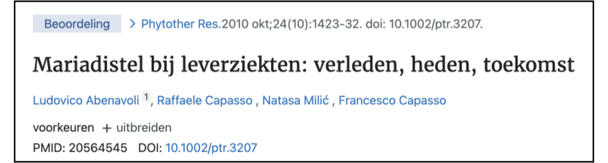
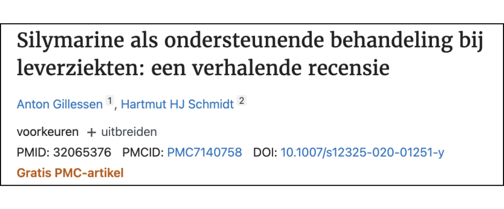
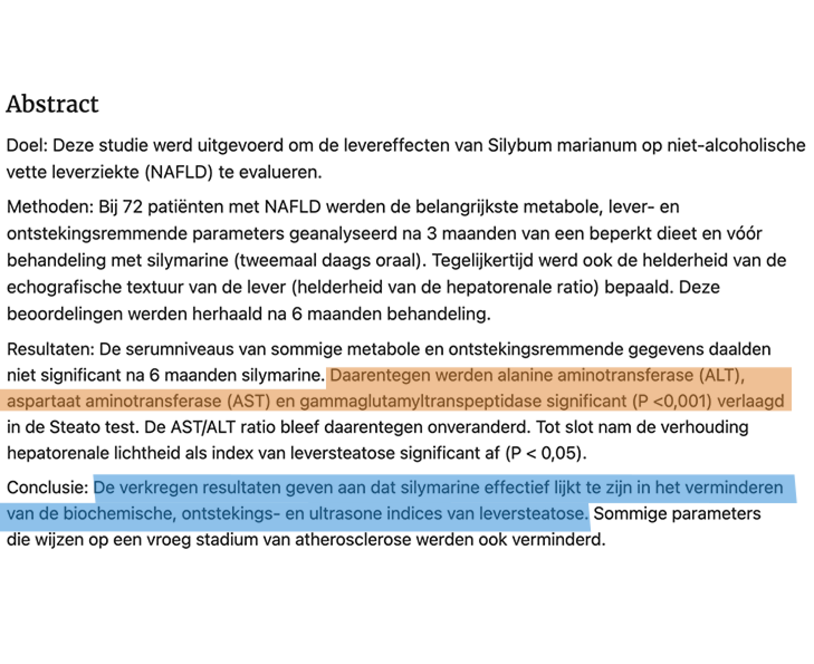
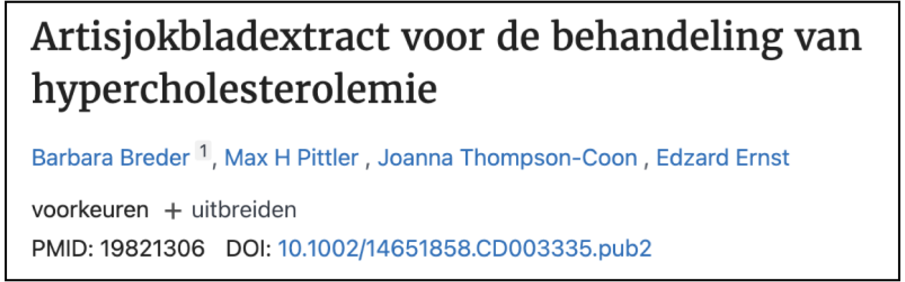
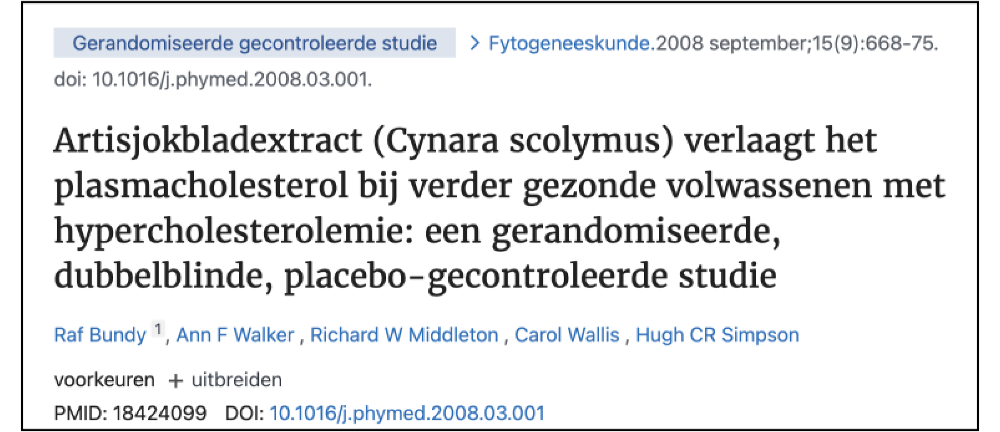

Hoe ik eindelijk weer kon afvallen na JARENLANG alles geprobeerd te hebben.
De kilo's vallen er eindelijk weer af. Lees hieronder mijn verhaal en ontdek waarom eerst niets hielp en wat uiteindelijk de doorslag gaf.
Hallo, ik ben Barbara en ik worstel al 10 jaar met overgewicht.
Sinds mijn zwangerschap 10 jaar geleden ben ik 20 kg aangekomen. En lange tijd wist ik niet waarom.
Als je dit artikel leest, worstel je waarschijnlijk ook met overgewicht.
Dus ik hoef je niet uit te leggen hoe zwaar dat is.
Daarom zal ik je de regels over schaamte, gebrek aan zelfvertrouwen en gezondheidsproblemen in de toekomst besparen.
Waar ik het echter over wil hebben, is het niet zelden voorkomende algemene oordeel over medemensen.
Mensen zeggen vaak: "Doe gewoon meer aan sport" of "Eet gewoon gezonder".
Of mijn favoriet: "als je gewoon minder eet, zul je ook afvallen. Zo moeilijk is het niet."
Ik heb deze mensen lange tijd geloofd.
En toen voelde ik me nog slechter toen het ene dieet na het andere mislukte.
Nu weet ik het: Nee, gewoon minder eten of meer sporten is niet altijd de oplossing.
Ja, ik weet wat een calorietekort of basaal metabolisme is.
In theorie zul je afvallen als je minder calorieën eet dan je lichaam verbrandt.
In de praktijk is dit echter niet altijd het geval.
Ik heb bijvoorbeeld 5 jaar lang een veganistisch dieet gevolgd.
Geen vlees, vis of eieren. Veel groenten, weinig koolhydraten.
Ik heb mijn calorieën tot op de cijfer geteld. 1600 kcal per dag.
Volgens de theorie zou mijn taillegoud gewoon weggesmolten moeten zijn.
Helaas gebeurde dat niet.
Ik vond het gewoon niet logisch.
Hoe kan het dat ik al zo weinig eet en toch niet meer afval?
Vandaag weet ik wat het was.
Ik heb een cruciaal stukje van de puzzel over het hoofd gezien.
Na meer dan 10 jaar lijden deed ik een beslissendeontdekking
Ik vond een methode waarmee ik binnen 6 weken maar liefst 5 kg kon afvallen.
Na in totaal 3 maanden was het zelfs 10 kg. En ik heb mijn nieuwe gewicht tot op de dag van vandaag kunnen vasthouden.
Ik voel me gezonder, actiever en vol energie.
Ik heb dit allemaal voor elkaar gekregen zonder mijn dieet te veranderen, op dieet te gaan of medische ingrepen.
En het beste van alles is: het is een volledig natuurlijke methode die zelfs mijn bloedwaarden heeft verbeterd.
Maar dat is niet alles: tijdens mijn onderzoek kwam ik er ook achter waarom zoveel mensen het zo moeilijk vinden omhun buikvet te verliezen.
Ook al hebben ze al een calorietekort en eten ze gezond.
Ik heb ontdekt wat de handrem is die je los moet maken om hem er uiteindelijk af te halen.
Als je dezelfde problemen hebt als ik, lees dan zeker dit artikel.
Ik heb me de afgelopen jaren met hart en ziel in dit onderwerp gestort en als een maniak gezocht naar een oplossing voor mijn probleem.
Ik wil nu graag mijn bevindingen met de wereld delen. Omdat ik zeker weet dat het jou ook zal helpen.
Tot nu toe heb ik moeiteloos mijn streefgewicht kunnen behouden
Hoe ben ik tot deze ontdekking gekomen en waar gaat het over?
Zoals hierboven vermeld, heb ik niet alleen allerlei diëten geprobeerd, maar ben ik ook al 5 jaar veganist.
Elk dieet is mislukt.
Met de beste diëten verloor ik veel gewicht in de eerste paar weken, maar kort erna zat ik al weer op het oude gewicht.
Weet je hoe frustrerend dat is? Het was het bekende jojo effect.
Je worstelt je door het dieet heen en zit maandenlang met een calorietekort – om uiteindelijk helemaal geen gewicht te verliezen of om het gewicht dat je bent kwijtgeraakt er meteen weer aan te laten komen door het jojo-effect.
Of zoals ik: je verliest de eerste 5-7 kg en daarna gaat het gewoon niet meer. Het is alsof het lichaam zegt: "tot hier en niet verder".
Toen ik over een periode van 6 maanden mijn voedselinname gedetailleerd begon te documenteren, besefte ik dat er iets niet klopte.
Ik at gemiddeld 1600 kcal per dag.
Voor een vrouw van 172 cm en 86 kg betekent dit dat ik had moeten afvallen.
Elke caloriecalculator op internet bevestigde dat mijn basisverbruik meer dan 2000 kcal per dag is.
Desondanks is er niets veranderd aan de weegschaal.
Het voelde alsof mijn lichaam een ander plan had dan afvallen.
Het was alsof er ergens in mijn lichaam een handrem was aangetrokken, waardoor het getal op de weegschaal gewoon stopte met bewegen.
Maar dat was niet alles: ik voelde me ook steeds vermoeider en lustelozer.
Het was heel moeilijk om hier niet in een neerwaartse spiraal terecht te komen.
Met veel moeite sleepte ik mezelf toch nog twee keer per week naar de sportschool.
Maar niets werd beter.
Tot overmaat van ramp was er op dat moment een zeer onplezierige gebeurtenis in mijn leven.
Nee, godzijdank was het niet mijn bruiloft.
Het was een klassenreünie.
De griezelreünie van de klas. Of het ontbrekende puzzelstukje?
Ik was nooit een dik kind, maar ook nooit bijzonder slank.
Toegegeven: Ik heb niet altijd gezond gegeten, vooral toen ik jonger was.
Als ontbijt genoten we van cornflakes, sinaasappelsap en een hapje van de heerlijke croissant.
Ik voelde me des te nerveuzer bij de gedachte aan de komende klasreünie.
Wat zouden mijn voormalige collega's van me denken?
Barbara, die er nu opeens 15 kg zwaarder uitziet?
Zoals zo vaak in het leven maken mensen zich onnodig zorgen over toekomstscenario's die nooit uitkomen.
Mijn gewicht was natuurlijk een onderwerp van gesprek. En in het begin vond ik dat ongemakkelijk.
Maar mijn klasgenoten stonden ook klaar met advies en steun.
Om precies te zijn was het mijn toenmalige vriendin Sabine die me hierover benaderde.
Sabine studeerde geneeskunde nadat ze van school kwam en ontmoette haar man Oliver.
Een gerespecteerde diëtist uit de VS, die ze ontmoette tijdens een semester in het buitenland en die nu in Berlijn woont en werkt in Berlijn.
Toen ik haar vertelde over het fenomeen dat het me al maanden niet lukte om af te vallen ondanks een calorietekort, gingen bij haar meteen de alarmbellen rinkelen.
Dat klonk haar bekend in de oren.
Haar man Oliver heeft hier vaak mee te maken gehad. Het was allesbehalve verrassend voor hem.
Sabine bood me toen vriendelijk aan om naar de praktijk van haar man te komen.
Dat is precies wat ik een week later deed.
Leververvetting als boosdoener
Oliver verwelkomde me hartelijk in zijn praktijk en kwam meteen ter zake.
Toen ik Oliver vertelde over mijn vele mislukte pogingen om af te vallen, kwam hij direct met zijn verdenkingen.
Hij zei:
‘Als ik hoor dat vrouwen ondanks een calorietekort niet afvallen en zich ook vaak moe voelen, dan heeft dat in 9 van de 10 gevallen te maken met de stofwisseling.’
Eén orgaan in het bijzonder is verantwoordelijk voor de stofwisseling:
De lever.
Daarom liet Oliver me eerst een gedetailleerd bloedonderzoek doen.
Twee weken later was ik terug in zijn praktijk in Berlijn.
Het resultaat van de test was schokkend.
Ondanks mijn nu gezonde, vetarme dieet waren mijn cholesterol- en triglyceridenwaarden licht verhoogd.
Bij navraag kwam ik erachter dat voeding slechts een beperkt effect heeft op deze waarden.
Veel hiervan is erfelijk en is gekoppeld aan een verhoogde suiker - en vetconsumptie op jongere leeftijd.
De zogenaamde gamma GT-waarde (gamma-glutamyltransferase) was ook verhoogd, wat duidt op een leververvetting.
ALT (alanine aminotransferase) en AST (aspartaat aminotransferase) zaten op de grens, maar waren (nog) niet verhoogd.
Verhoogde gamma-GT-, AST- en ALT-waarden kunnen wijzen op een leververvetting.
'De kans is heel groot dat je een leververvetting hebt', zei Oliver toen tegen me.
Leverwaarden en hun betekenis
In mijn geval spraken de leverwaarden een duidelijke taal.
Als de gamma-GT waarde verhoogd is (in mijn geval was deze 49 U/l), is dit een teken van leververvetting.
Als ALT en AST verhoogd zijn, zit je vaak al in stadium 2 - een ontstoken vette lever.
Je moet echter ook voorzichtig zijn met de leverwaarden: zelfs als de waarden er goed uitzien, kun je last hebben van een
leververvetting. Vooral de cholesterolwaarde wordt vaak verkeerd begrepen.
Daarom raadt Oliver aan om eerst en vooral naar je symptomen te luisteren.
Onverklaarbare gewichtstoename, of hardnekkig buikvet ondanks een calorietekort, en ernstige vermoeidheid zelfs na voldoende slaap behoren tot de symptomen.
Wat is leververvetting?
De term leververvetting wordt gebruikt wanneer een groot deel van de levercellen vet bevat.
Net zoals het lichaam vet kan ophopen aan de buitenkant, hoopt vet zich ook op aan de binnenkant - soms zelfs op de organen.
Daarom hebben mensen met overgewicht en veel lichaamsvet meestal ook een leververvetting.
Naar schatting heeft 20-30% van alle Nederlanders last van leververvetting.
Ja, dat lees je goed. Ongeveer één op de vier mensen in Nederland heeft een leververvetting.
Velen doen dat zelfs zonder het te beseffen.
Dit komt omdat het klassieke symptoom - een drukkend gevoel in de rechter bovenbuik - vaak alleen optreedt bij een vergevorderde leververvetting.
Veel vaker komen symptomen voor zoals mislukte pogingen om af te vallen ondanks een calorietekort, droge huid en jeuk, overmatig zweten en constante vermoeidheid.
Leververvetting wordt vaak ingedeeld in drie stadia:
- Een leververvetting zonder ontsteking. In dit geval is er geen pijn omdat de lever geen pijnreceptoren heeft.
- Steatohepatitis of leververvetting, d.w.z. een leververvetting met een ontstekingsreactie. Een drukkend gevoel in de bovenbuik, een opgeblazen gevoel en vaak een vol gevoel zijn symptomen van dit stadium.
- Levercirrose. Vanaf dit punt is de ziekte onomkeerbaar!
Volgens schattingen gaat iets minder dan de helft van alle getroffenen van stadium 1 naar stadium 2.
Levercirrose komt in iets minder dan 10% van de gevallen voor.
Vooral mensen met overgewicht worden vaak getroffen door leververvetting. Steeds meer kinderen en jongeren.
"Een ongezond dieet, gebrek aan lichaamsbeweging of een andere ziekte kan ervoor zorgen dat de zogenaamde niet-alcoholische leververvetting zich ontwikkeld."
- Universitair ziekenhuis Amsterdam
Leververvetting is vaak het gevolg van een ongezond dieet of het gebruik van sterke medicatie tegen andere ziekten.
In medische terminologie wordt het NAFL genoemd - niet-alcoholische leververvetting.
Vooral suiker speelt een grote rol.
Oliver liet me de volgende studie zien.
Dit onderzoek toonde aan dat een hoge consumptie van fructose en suiker kan leiden tot een vervette lever en zelfs het darmmicrobioom kan verstoren.
Het probleem hiermee? Het is nu bijna onmogelijk om suiker en suikerachtige stoffen te vermijden.
De voedingsindustrie "verbergt" suiker tegenwoordig in de ingrediëntbeschrijvingen van veel voedingsmiddelen.
In plaats van suiker vind je woorden als maltrose, lactose of maïssiroop.
Zelfs zogenaamd gezond voedsel zoals mueslirepen of verschillende lightproducten worden beïnvloed.
Ja, zelfs te veel fruit of smoothies bevorderen een vette lever.
Dit komt omdat de fructose die het bevat ook wordt omgezet in suiker en later in vet.
Wat een ironie: je koopt een light yoghurt met extra weinig vet om gezond te eten, en uiteindelijk bevorder je alleen maar leververvetting door de toegevoegde suiker!
Wat is het verband tussen leververvetting en mijn mislukte pogingen om af te vallen?
De diagnose leververvetting was in het begin nogal een schok voor me.
Maar ik begreep niet helemaal waarom een leververvetting me plotseling zou verhinderen om af te vallen.
Oliver legde me toen precies uit welke rol de lever speelt.
Na deze uitleg realiseerde ik me waarom ik niet meer kon afvallen en me altijd zo moe voelde.
Opeens werd duidelijk waarom mijn diëten allemaal mislukt waren.
"De lever is het centrale orgaan van de hele stofwisseling. Als de lever beperkt is in zijn functie, is het bijna onmogelijk om effectief af te vallen." zegt Oliver.
De lever en metabolisme
Heb je je ooit afgevraagd wat de stofwisseling eigenlijk is?
Wat een modewoord is geworden, betekent niets meer dan de transformatie van stoffen in het lichaam.
De stofwisselingsprocessen vinden voornamelijk plaats in de lever.
De lever kan worden gezien als een afvalscheidings- en afvoersysteem.
Alles wat we opnemen wordt chemisch of fysisch zo getransformeerd dat we het kunnen gebruiken voor verdere processen.
Vroeg of laat komt alles wat we binnenkrijgen in de lever terecht en wordt daar afgebroken.
Dit geldt zowel voor medicijnen als voor voedsel.
Een stuk cake, bijvoorbeeld, wordt gespleten en geplet in de maag en darmen.
Een deel ervan wordt dan naar de lever getransporteerd, waar de nuttige voedingsstoffen worden gemetaboliseerd, afhankelijk van wat het lichaam op dat moment nodig heeft.
De onbruikbare delen worden door de lever klaargemaakt voor afbraak en "afvalverwerking".
Daarom wordt de lever ook beschouwd als een ontgiftingsorgaan.
Tot dit punt was Olivers uitleg begrijpelijk en niet verrassend.
Maar wat hij me toen vertelde was iets wat ik nog nooit eerder had gehoord.
Hij zei: "Obesitas wordt vaak in verband gebracht met de opslag van schadelijke stoffen in de lever."
Als iemand kan eten wat hij of zij wil en gewoon niet aankomt, wordt dit in de volksmond afgedaan als een "snel metabolisme".
In werkelijkheid betekent dit gewoon dacqst de lever van deze persoon nog niet aangetast is in zijn functie en alles zonder problemen kan metaboliseren.
Omgekeerd betekent dit dat een ongezonde lever - zoals de mijne - sneller zijn grenzen bereikt.
En dit uit zich dan in vermoeidheid en gewichtsproblemen.
Dit is overigens ook de reden waarom je op jongere leeftijd niet zo snel aankomt - de lever is gewoon nog
fitter en nog niet zo zwaar belast met medicijnen, ongezond voedsel of alcohol.
Idealiter is een gezonde lever in staat om vetten, gifstoffen en hormonen moeiteloos te verwerken.
Je kunt je het geheel voorstellen als een afvalsorteerinstallatie met een lopende band.
De lopendebandmedewerkers (de zogenaamde leverkwabben) hebben de taak om al het bruikbare van het onbruikbare te sorteren.
Als de werkers echter overbelast zijn en het niet langer kunnen bijbenen, moet de lever gewoon alles samen opslaan als noodoplossing (vetten, gifstoffen, hormonen) op dezelfde plaats opslaan.
Bij sommige mensen is de lever al zo traag dat hij niet meer zo goed vet kan verwerken als vroeger.
De vetten die met voedsel worden verbruikt, worden dan niet verbrand als energie, maar komen terecht als e op de heupen.
Dat is de reden waarom ik niet kon afvallen ondanks dat ik 1600 kcal per dag at.
Mijn lever kan de calorieën die ik elke dag binnenkrijg niet meer optimaal verwerken.
Er hoopt zich meer heupvet op dan bij iemand met een gezonde lever.
Volgens de caloriecalculator zou mijn lichaam 2000 kcal per dag moeten verbranden.
Maar hoe weet ik hoeveel hij echt verbrandt met een trage lever?
Wat als hij maar 1500 kcal verbrandt?
"Je metabolisme draait met de handrem erop omdat je lever overbelast is", was Olivers conclusie.
Het was me duidelijk: ik moest de handrem loslaten.
Samenvatting tot nu toe:
- 20-30% van alle mensen in Nederland heeft leververvetting.
- Vooral mensen met overgewicht worden getroffen constante vermoeidheid, droge huid en jeuk, maar ook problemen met afvallen ondanks een calorietekort kunnen aanwijzingen zijn voor leververvetting.
- Obesitas is gekoppeld aan de gezondheid van de lever.
- Een trage, overbelaste lever leidt tot meer vet in het lichaam. Zelfs als je niet te veel calorieën eet.
- Zonder een gezonde lever is het ongelooflijk moeilijk om op gewicht te blijven of af te vallen.
Leververvetting kan worden genezen
Maar Oliver had ook goed nieuws voor me.
De lever is het enige orgaan in het menselijk lichaam dat zichzelf volledig kan genezen.
Volgens hem is het genezen van een leververvetting eigenlijk heel eenvoudig. Sommige van zijn patiënten lukt het zelfs binnen een paar weken.
Verrassend genoeg is alleen je dieet veranderen niet de meest efficiënte methode.
Bovendien is een te radicaal dieet zelfs schadelijk voor de lever.
Daarom moet je wegblijven van diëten en het momenteel zo populaire levervasten.
Levervasten houdt in dat je 2 weken lang voornamelijk groenten en proteïnepoeder eet.
Dit is erg stressvol en contraproductief voor de lever.
Dit verergert vaak zelfs bepaalde voedingstekorten.
Overigens zijn cholesterolverlagende medicijnen (zogenaamde statines) hier ook geen goede oplossing.
Ze maskeren alleen de symptomen, maar ontvetten de lever niet.
Je manipuleert als het ware alleen je cholesterolwaarden.
Statines mogen alleen worden gebruikt als je een hoog risico op hart- en vaatziekten hebt.
In plaats daarvan gebruikt Oliver een speciaal ontwikkelde leververvettingkuur voor zijn patiënten.
De methode om leververvetting tegen te gaan
De leververvetting detox methode is door Oliver speciaal ontwikkeld voor mensen die niet meer kunnen afvallen door hun lever.
Dit vermindert niet alleen de leververvetting, maar versterkt ook andere organen die bevorderlijk zijn voor effectief gewichtsverlies.
Dit omvat bijvoorbeeld de vaak onderschatte gal.
Het bijzondere eraan: je hoeft niet op dieet en de methode is 100% gebaseerd op natuurlijke ingrediënten.
Je vertrouwt op een normale, evenwichtige voeding en maakt ook gebruik van de kracht van de natuur door je specifiek te richten op plantaardige stoffen die al eeuwenlang door de mens worden gebruikt om de lever te ontgiften.
De basis van de leververvetting detox methode is daarom het product Liver Detox Blend van het Nederlandse familiebedrijf Greenleaf Blends, dat alle ingrediënten combineert die essentieel zijn voor een gezonde lever.
Het familiebedrijf heeft haar krachten gebundeld met experts om een unieke samenstelling te creëren. Deze bestaat uit de nieuwste en meest zuivere wetenschappelijk bewezen ingrediënten.
Eén pot Liver Detox Blend (€34,99 per stuk) bevat 60 capsules waar je een maand mee kunt doen.
Dit is maar €1,17 per dag. Eerlijk gezegd heb ik zelfs meer over voor mijn gezondheid, als ik maar van de leververvetting afkom dacht ik.
Er liep ook een korting op de kuur van 3 maanden die oploopt tot wel 100 euro! Hier kom je uit op €0,88 per dag.
Iets minder dan €0,88 per dag voor de kans om eindelijk mijn gewenste gewicht te bereiken en tegelijkertijd mijn lever te ontgiften en te reinigen?
Met ingrediënten die gebaseerd zijn op wetenschappelijke studies?
De keuze was voor mij makkelijk: dit is het proberen meer dan waard.
Wat zit erin? En waarom?
Het zal heel lang duren voordat de lever nieuwe, gezonde cellen heeft gevormd en het vet heeft afgebroken als je alleen maar je dieet verandert.
Hoewel een verandering in dieet aan te raden is, zal dit alleen leververvetting niet genezen.
Er wordt altijd gezegd: "als je 4-5 kg afvalt, kom je ook van je leververvetting af".
Je kunt dit advies ook van je arts krijgen.
Maar hier bijt de kat in de staart.
Het probleem is dat je niet blijvend kunt afvallen vanwege je leververvetting.
Daarom is het des te belangrijker om actief bij te dragen aan de regeneratie van de lever en de vorming van nieuwe levercellen.
Je moet dus eerst de lever herstellen en dan pas afvallen. En niet andersom.
In plaats daarvan moeten het lichaam en de lever actief worden voorzien van voedingsstoffen die de lever ondersteunen bij het ontgiften en regenereren.
En dat is precies waar Liver Detox Blend voor gemaakt is.
Liver Detox Blend bestaat uit hoge doses mariadistel, artisjok en paardenbloemwortel.
Deze natuurlijke stoffen worden al eeuwenlang gebruikt voor de gezondheid van de lever.
Ondertussen zijn de actieve bestanddelen die het bevat al onderzocht in wetenschappelijke studies in verband met leververvetting.
Waarschuwing: wat volgt zal je zeker van je sokken blazen.
De bovengenoemde planten zijn al onderzocht in wetenschappelijke studies in verband met leververvetting.
En de resultaten zijn absoluut verbluffend.
Mariadistel
Mariadistel is een echte wonderplant als het gaat om de gezondheid van de lever.
Het is een medicinale plant met antioxiderende eigenschappen. Dit betekent dat het vrije radicalen neutraliseert enoxidatieve stress vermindert.
Mariadistel is zeer goed onderzocht op het gebied van levergezondheid.
Het volgende onderzoek uit Italië moet hier worden benadrukt:
Uit de analyses kunnen de volgende conclusies worden getrokken:
- Mariadistel bevordert de afvoer van oude rode bloedcellen uit de lever.
- Het neutraliseert gif- en afvalstoffen in de aderen van de lever.
- Het voorkomt dat gifstoffen de levercellen binnendringen.
- Het bevordert de regeneratie van de lever en de vorming van nieuwe gezonde levercellen.
- Bij dieren kan de lever zelfs beschermen tegen de inname van sommige medicijnen (bijv. paracetamol) en alcohol.
- Het verbetert de galproductie in de lever en reinigt de galwegen in de lever.
- Het ondersteunt de lever in zijn ontgiftingsfunctie, vooral wanneer mariadistel gecombineerd wordt met paardenbloem en artisjok.
Maar er is een tweede, veel indrukwekkender onderzoek:
Aan dit onderzoek namen 72 leververvettingpatiënten twee keer per dag het actieve ingrediënt silymarin (dat ook in mariadistel zit).
Het onderzoek duurde 3 maanden en de proefpersonen werden regelmatig onderzocht op de belangrijkste leverwaarden.
Het verbazingwekkende resultaat: de inname van silymarine leidde tot significante verbeteringen in de ALT-, AST- en gamma-GT waarden!
Onthoud: het zijn juist deze waarden die wijzen op een leververvetting.
Zelfs volgens echografie verbeterde de leververvetting bij de proefpersonen.

Artisjok
Hoewel mariadistel zeer geschikt is om de AST-, ALT- en gamma-GT-spiegel te verbeteren, is er nog geen effect op het cholesterolgehalte aangetoond.
Daarom raadt Oliver een andere geneeskrachtige plant aan: de artisjok.
De artisjok kan worden gebruikt als een natuurlijk cholesterolverlagend middel, zoals dit onderzoek aantoont:
Aan dit onderzoek namen 143 volwassenen deel die gedurende 6 weken dagelijks artisjokbladextract innamen.
Het resultaat: de controlegroep slaagde er gemiddeld in om hun cholesterolwaarden met 18,5% te verlagen.
De artisjok heeft ook positieve effecten op de spijsvertering en de gal. Het verbetert de galstroom en bevordert de functie van de alvleesklier.
Het meest indrukwekkend was echter dit onderzoek, dat een hepatoprotectief effect toeschrijft aan artisjokbladextract.
Dit betekent dat de artisjok de levercellen beschermt en de regeneratie stimuleert:
Aan dit onderzoek deden 100 mensen mee bij wie leververvetting was vastgesteld.
De proefpersonen consumeerden 2 maanden lang elke dag artisjokbladextract.
Het resultaat: vergeleken met de placebogroep, die niets had ingenomen, was de lever van de artisjokgroep na 2 maanden beter doorbloed en kleiner.
Dit is precies waarom Olivers methode zo goed werkt.
Je regenereert en beschermt je lever actief in plaats van alleen maar vetarm te eten.
Het resultaat: een gezonde lever en betere cholesterol-, AST-, ALT- en gamma-GT-niveaus.
"Geen enkel dieet ter wereld kan de kracht van artisjokken en mariadistel evenaren," zei Oliver.
Paardenbloemwortel
Paardenbloemwortel met het actieve ingrediënt taraxacine is een absolute krachtpatser in Liver Detox Blend.
Paardebloemwortelextract is ook aanwezig in de capsules in een hoge verhouding van 4:1.
Taraxacine activeert de productie van gal, wat leidt tot een betere stofwisseling.
Gal speelt een belangrijke rol in het vetverbrandingsproces van het lichaam.
De lever is via de galbuis verbonden met de galblaas.
Gal wordt al geproduceerd in de lever.
Deze vloeistof wordt vervolgens via de galbuis naar de galblaas getransporteerd.
De vloeistof wordt daar opgeslagen.
De vloeistof gaat dan van de galblaas naar de darmen, waar het helpt bij de spijsvertering.
Gal van hoge kwaliteit is belangrijk voor een optimale spijsvertering, maar ook voor een goede verwerking van vet.
Als dit niet aanwezig is (bijvoorbeeld door een vette lever), kan dit leiden tot verterings- en verwerkingsproblemen met vetten.
Kortom: hoe beter de gal, hoe gemakkelijker het is om overtollig vet te "verbranden".
Dankzij de andere stoffen die het bevat, kan het ook helpen bij winderigheid, een opgeblazen gevoel en brandend maagzuur.
Oliver adviseerde me om minder suiker te eten.
Door je dieet aan te passen zodat je minder suiker binnenkrijgt, kun je voorkomen dat je leververvetting erger wordt.erger wordt.
Je hoeft suiker en koolhydraten niet helemaal op te geven.
Oliver raadt echter aan om niet meer dan 50 gram suiker per dag te eten.
Belangrijk: een lever detox moet je niet zien als een dieet. Het gaat er niet om jezelf te martelen en uit te hongeren.
In plaats daarvan streven we naar een evenwichtig, normaal dieet.
De methode om leververvetting tegen te gaan
Om Olivers methode te implementeren, moet je de volgende stappen volgen:
Voorkom de progressie van leververvetting: Dit doe je door je suikerconsumptie te verminderen.
Regenereer de lever: Hiervoor heb je mariadistelzaad en artisjokblad extract nodig.
Verbeter het gal: De beste manier om dit te doen is met paardenbloemwortel.
De 3 stappen van de leververvetting detox methode
Het bedrijf achter Liver Detox Blend
Wat me een stukje vertrouwen gaf: De Liver Detox Blend is niet alleen het product van een Nederlands familiebedrijf, maar is ook getest door een onafhankelijk laboratorium.
Dit is een zeer belangrijke factor, vooral voor leverpreparaten.
Het in Rotterdam gevestigde bedrijf heeft het tot zijn missie gemaakt om nieuwe kwaliteits- en duurzaamheidsnormen te stellen voor natuurlijke producten.
Elk product is ontworpen op basis van de nieuwste bevindingen en onderzoeksresultaten en wordt gemaakt van de best beschikbare grondstoffen.
Mijn experiment met Liver Detox Blend begint
De Liver Detox Blend bevat de hierboven genoemde ingrediënten.
En in extractvorm met een hoge dosis.
Mariadistel extract is verkrijgbaar in een 25:1 verhouding. Dit betekent dat het extract 25 keer geconcentreerder is dan het uitgangsmateriaal.
80% hiervan is het actieve ingrediënt silymarine, dat ook het onderwerp was van talrijke onderzoeken.
Dit is belangrijk om te benadrukken. Je hebt het juiste soort mariadistelzaadextract nodig.
Overigens: veel andere leverpreparaten kosten meer geld en hebben een te lage dosering silymarine.
Artisjokblad extract is verkrijgbaar in een 5:1 ratio.
Paardenbloemwortelextract is verkrijgbaar in een verhouding van 4:1.
Voordat ik het product als test bestelde, bladerde ik door de beoordelingen van klanten.
Ik wilde weten of er al mensen met leververvetting zijn die het product gebruiken.
Dit is wat ik vond:
Wauw.
Vooral de laatste recensie vond ik geweldig.
Ik besloot het product 3 maanden lang een kans te geven.
Om het experiment nog spannender te maken, liet ik na 3 maanden nog een volledig bloedonderzoek doen.
Het resultaat was verbluffend!
Mijn cholesterol is licht gedaald naar 190mg/DL. Nog steeds hoog, maar nu in ieder geval binnen het referentiebereik.
Het verbazingwekkende was echter de gamma-GT-waarde, die 3 maanden geleden nog wees op een leververvetting.
Mijn gamma-GT-waarde daalde van 49 U/l naar slechts 22 U/l.
Bij vrouwen moet de waarde zeker lager zijn dan 40 U/l.
AST en ALT zijn ook licht verbeterd.
Maar het grootste verschil was merkbaar op de weegschaal.
Ik heb mijn dieet niet veranderd. Ik had dus nog steeds een calorietekort.
Maar nu voelde ik eindelijk het tekort op de weegschaal.
In de eerste maand ben ik "maar" 2 kg afgevallen.
Maar meer had ik niet verwacht.
Volgens Oliver moest de lever immers eerst genezen, zodat de stofwisseling op gang kon komen.
Maar wat ik al vroeg merkte, was dat ik me minder moe voelde, dat ik gemakkelijker kon sporten en dat mijn slaap ook verbeterde.
Vanaf de tweede maand begonnen de kilo's echt te verdwijnen.
Wat eerst een neerwaartse spiraal was, is nu een opwaartse spiraal geworden:
Gezonde lever -> meer energie -> hoger calorieverbruik -> minder lichaamsvet -> minder vet op de lever
Na 3 maanden was ik 10 kg afgevallen en sindsdien heb ik mijn gewicht kunnen vasthouden.
De handrem werd eindelijk losgelaten.
Mijn lever was beter dan ooit tevoren.
Zoals je kunt zien, ben ik helemaal overtuigd van de Liver Detox blend.
Ik kan je alleen maar aanraden om het eens te proberen.
Je hebt niets te verliezen. Je kunt alleen aan levenskwaliteit winnen - en dat is gegarandeerd.
Greenleaf Blends biedt een 365 dagen geld-terug garantie.
Daarom link ik je hier naar de Greenleaf Blends online shop, waar je ook precies hetzelfde product kunt bestellen.
Klik op de knop om de beschikbaarheid van Liver Detox Blend te bekijken
Wat ik goed vind aan de Liver Detox Blend
- Het wordt ontwikkeld door een gerenommeerd bedrijf in Nederland.
- De samenstelling is door experts samengesteld. Je kunt zien dat er bij de ontwikkeling van het product rekening is gehouden met de huidige vooraanstaande onderzoeken.
- Greenleaf Blends biedt het product aan tegen een absoluut eerlijke prijs. Andere levercomplexen, die van mindere kwaliteit zijn, kosten soms 60-80€ per maand. Liver Detox Blend is al verkrijgbaar voor €23 per maand.
- De ingrediënten zijn natuurlijk en van de hoogste zuiverheid en kwaliteit.
- Ik vind de verpakking prachtig.
- Ik hoef maar 2 capsules per dag in te nemen om mijn leververvetting tegen te gaan.
De schrijfster
Barbara Lang worstelde meer dan 10 jaar met overgewicht. Ondanks verschillende diëten kon ze gewoon niet niet meer afvallen. Pas toen ze van haar leververvetting genas, kon ze eindelijk haar streefgewicht bereiken en is sindsdien op het streefgewicht gebleven.
Bijlage
Vanwege de vele positieve reacties heb ik opnieuw een aantal veelgestelde vragen beantwoord:
Wat onderscheidt de Liver Detox Blend van andere leverproducten?
Mariadistelextract is meer geconcentreerd in Liver Detox Blend dan in de meeste andere leverproducten. Er is ook choline toegevoegd, wat in veel andere levercomplexen ontbreekt. Onafhankelijke laboratoriumtests zijn bijzonder belangrijk voor leverproducten. Het lijdt geen twijfel dat kwaliteit en veiligheid hier gegarandeerd zijn. Het bedrijf Greenleaf Blends heeft in dit opzicht een zeer goede reputatie. In tegenstelling tot andere bedrijven van dit type is Greenleaf geen eigendom van een gigantisch supplementenconglomeraat dat alleen maar oog heeft voor winstmaximalisatie. Integendeel: het is nog steeds een familiebedrijf dat in handen is van de oorspronkelijke oprichters. Dat zie je ook terug in de prijs. Liver Detox Blend is aanzienlijk goedkoper dan vergelijkbare leverproducten.
Hoe lang duurt het voordat je de eerste veranderingen ziet?
Voedingssupplementen op basis van kruiden hebben op iedereen een ander effect, omdat elk lichaam zelf bepaalt hoe het omgaat met de ingrediënten die ze bevatten. Daarom is het niet mogelijk om een algemeen antwoord te geven. Er is echter feedback van veel klanten waarbij de eerste effecten worden gemeld na iets minder dan 3 weken regelmatig gebruik.
Kan ik de Liver Detox Blend ook zonder leververvetting innemen?
Ja, Liver Detox Blend kan ook preventief worden ingenomen of als een leververvetting wordt vermoed. Alle ingrediënten zijn van natuurlijke oorsprong. Vooral mensen die hun lever belasten door voeding, alcoholgebruik of medicatie kunnen baat hebben bij het product.
Wat als ik niet tevreden ben met het product?
Ze bieden een geld-terug-garantie als je niet tevreden bent met de resultaten. Neem contact op met hun klantenservice via support@greenleafblends.nl voor hulp bij retourzendingen en terugbetalingen.
8 Antwoorden
Francine de Graaf
Ik ga het proberen omdat het blijkt dat ik een leververvetting heb. Op hoop van zege!
Antwoorden
Ik ga het proberen omdat het blijkt dat ik een leververvetting heb. Op hoop van zege!
Antwoorden
B. Rijn
Hallo Barabara! Dat klinkt allemaal geweldig en is ook heel goed beschreven! Maar wat doe ik als ik geen galblaas meer heb en dus de vetten niet meer kan splitsen? Het zou heel fijn zijn om hier een antwoord op te krijgen, alvast bedankt! Vriendelijke groeten B. Rijn
Antwoorden
Hallo Barabara! Dat klinkt allemaal geweldig en is ook heel goed beschreven! Maar wat doe ik als ik geen galblaas meer heb en dus de vetten niet meer kan splitsen? Het zou heel fijn zijn om hier een antwoord op te krijgen, alvast bedankt! Vriendelijke groeten B. Rijn
Antwoorden
Barbara Lang
Hallo! Als je geen galblaas meer hebt, betekent dit niet dat er geen gal meer is en dat vetten niet meer kunnen worden afgebroken. In de galblaas wordt alleen gal opgeslagen. De vloeistof wordt echter geproduceerd door de lever. Dit betekent dat de gezondheid van de lever een nog belangrijkere rol speelt zonder galblaas. Met vriendelijke groet, Barbara
Antwoorden
Hallo! Als je geen galblaas meer hebt, betekent dit niet dat er geen gal meer is en dat vetten niet meer kunnen worden afgebroken. In de galblaas wordt alleen gal opgeslagen. De vloeistof wordt echter geproduceerd door de lever. Dit betekent dat de gezondheid van de lever een nog belangrijkere rol speelt zonder galblaas. Met vriendelijke groet, Barbara
Antwoorden
Erika K.
Net besteld en ik ga het proberen. Bij mij is 2 jaar geleden leververvetting vastgesteld en ik neem cholesterolverlagende medicijnen. Maar mijn leververvetting is niet echt beter geworden.
Antwoorden
Net besteld en ik ga het proberen. Bij mij is 2 jaar geleden leververvetting vastgesteld en ik neem cholesterolverlagende medicijnen. Maar mijn leververvetting is niet echt beter geworden.
Antwoorden
Felice Kilinc
Ik heb een vraag. Moet je echt je dieet veranderen? Ik eet nu rogge-, aardappel- of haverbrood met verschillende soorten beleg. Groenten erop als ik ze heb, zoals komkommer en tomaat. Ik eet nu ook muesli met melk omdat ik het niet lekker vind met water. Ik drink ook graag een hele fles frisdrank of vruchtensap naast water. Ik eet ook af en toe fastfood, maar verder kook ik met hello fresh. Er zijn ook verschillende dingen zoals veganistisch, vegetarisch, gevogelte, rood vlees, vis en varkensvlees.
Antwoorden
Ik heb een vraag. Moet je echt je dieet veranderen? Ik eet nu rogge-, aardappel- of haverbrood met verschillende soorten beleg. Groenten erop als ik ze heb, zoals komkommer en tomaat. Ik eet nu ook muesli met melk omdat ik het niet lekker vind met water. Ik drink ook graag een hele fles frisdrank of vruchtensap naast water. Ik eet ook af en toe fastfood, maar verder kook ik met hello fresh. Er zijn ook verschillende dingen zoals veganistisch, vegetarisch, gevogelte, rood vlees, vis en varkensvlees.
Antwoorden
Barbara Lang
Hallo Felice! Het is wel belangrijk om gezond te eten. Natuurlijk, als je veel te veel en slechte calorieën consumeert, zal zelfs een leverkuur niet werken. Je dieet klinkt verder erg goed! Alleen de koolzuurhoudende dranken en sappen zijn niet ideaal. Een dieet met te veel suiker bevordert leververvetting. Het is dus het beste om alleen water, thee en koffie te drinken. Dit alleen al kan je 200-300 kcal per dag schelen! Met vriendelijke groet, Barbara
Antwoorden
Hallo Felice! Het is wel belangrijk om gezond te eten. Natuurlijk, als je veel te veel en slechte calorieën consumeert, zal zelfs een leverkuur niet werken. Je dieet klinkt verder erg goed! Alleen de koolzuurhoudende dranken en sappen zijn niet ideaal. Een dieet met te veel suiker bevordert leververvetting. Het is dus het beste om alleen water, thee en koffie te drinken. Dit alleen al kan je 200-300 kcal per dag schelen! Met vriendelijke groet, Barbara
Antwoorden
Walter
Kan dit ook worden ingenomen als je een operatie aan de galblaas hebt gehad?
Antwoorden
Kan dit ook worden ingenomen als je een operatie aan de galblaas hebt gehad?
Antwoorden
Barbara Lang
Ja, vooral bij een operatie aan de galblaas is het belangrijk om de galproductie in de lever te stimuleren.
Antwoorden
Ja, vooral bij een operatie aan de galblaas is het belangrijk om de galproductie in de lever te stimuleren.
Antwoorden